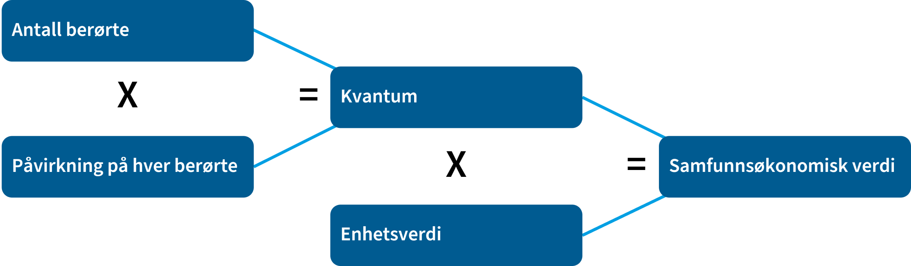
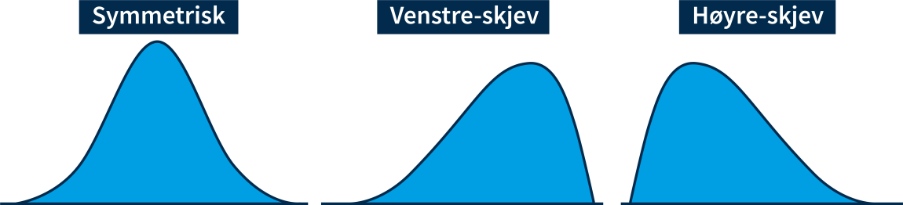

3: Tallfesting av virkninger og beregning av samfunnsøkonomisk lønnsomhet
SOK-2301 - Nytte-kostnadsanalyse i teori og praksis
Framgangsmåte for å vurdere virkninger
- Alle positive og negative virkninger tallfestes så langt det lar seg gjøre
- Dersom betalingsvilligheten > summen av kostnadene:
- → Samfunnsøkonomisk lønnsomt.
- Kostnadene ⇔ verdien av det en må gi opp av andre ting (alternativkostnad)
- Nytten ⇔ hvor mye en er villig til å betale (folks samlede betalingsvillighet)
- Flest mulig virkninger fastsettes i kroner
Finn effekt, kvanta og pris, for å tallfeste virkningene

Kvantum
- Institusjoner
- Personer
- Bygg
- ++ …
Metoder for å finne virkninger:
- Estimere virkninger med empiriske data
- Randomiserte kontrollerte forsøk
- Naturlige eksperimenter
- Lab-eksperimenter
- Generell empirisk og teroretisk kunnskap
- Tidligere analyser
Enhetspris
- Lønnsutgifter: Brutto reallønn inkl. arb.giveravg. og sosiale kostn.
- Fritid: Netto inntekt etter skatt
- Størst mulig grad markedspriser
- Vareinnsats: Pris eksl. toll + avgifter, inkl. avgift+kvotepris som er korreksjon
- Kvotekostnad uten CO-avgift brukes til kostnad ved klimagassutslipp
- Verdien på et statistisk liv - 55 mill.
Beregn samfunnsøknomisk effekt
Skattefinansieringskostnad
- Identifiser direkte netto virkningen på offentlige budsjetter
- Identifiser indirekte netto endring i beskatningsgrunnlaget.
- multipliser med 45%
- Skattefinansieringskostnaden er 20% av 1 og 2
Ikke prissatte virkninger
- verdimatrisemetoden
| Kvantum / Enhetsverdi | Liten | Middels | Høy |
|---|---|---|---|
| Stort negativt | Middels negativ | Stor negativ | Meget stor negativ |
| Middels negativt | Liten negativ | Middels negativ | Stor negativ |
| Lite negativt | Ubetydelig/ingen | Liten negativ | Middels negativ |
| Verken positivt eller negativt | Ubetydelig/ingen | Ubetydelig/ingen | Ubetydelig/ingen |
| Lite positivt | Ubetydelig/ingen | Liten positiv | Middels positiv |
| Middels positivt | Liten positiv | Middels positiv | Stor positiv |
| Stort positivt | Middels positiv | Stor positiv | Meget stor positiv |
Vurder forventningsverdier
Summen av Sannsuynlighet * kostnad

Samfunnsøkonomisk verdi
Vurdere samfunnsøkonomisk lønnsomhet
- Bruk nåverdimetoden for prissatte virkninger → ranger tiltakene
- Bruk verdimatrisemetoden til å sammenstille ikke-prissatte virkninger
- Ranger tiltakene basert på prissatte og ikke-prissatte virkninger
Beregn netto nåverdi
Oppgave
- Hvordan er tiltakene rangert ihht. netto nåverdi?
- finn netto nåverdi for tiltakene som er vurdert
- er det bare ett, hvordan er det rangert ift. 0-alternativet
- Hvordan er ikke-prissatte virkninger vurdert?
- Påvirker ikke-prissatte virkninger rapportens anbefaling?